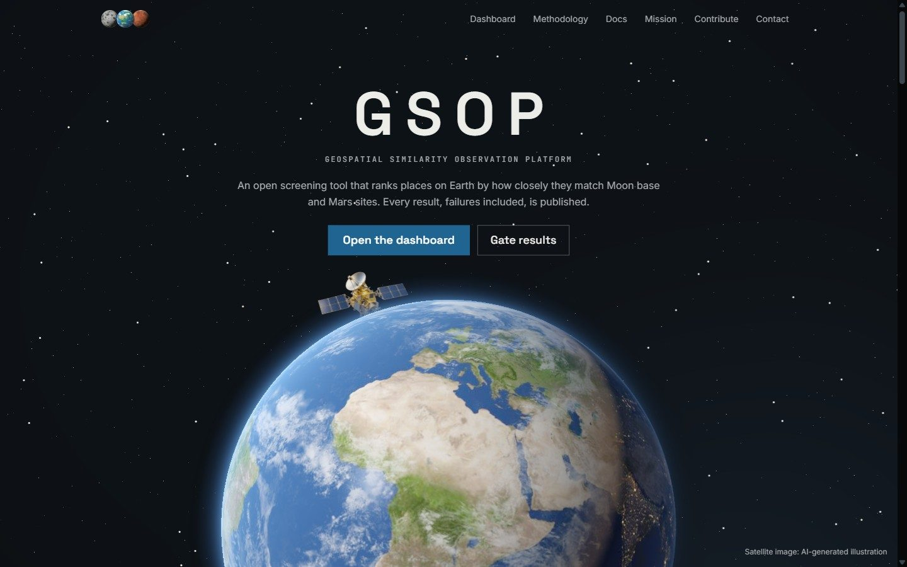

Geospatial Similarity Observation Platform
GSOP
Which places on Earth look most like Moon and Mars sites, and how far can we trust that answer?
A transparent, reproducible screening method with an India focus. Every result is published, failures included.
Anay Dhawan, Yash Kewlani, Vihaan Bhagwat, Shiven Sood, Shaurya Jani, Shaurya Gangrade
gsoplatform.vercel.app

Satellite image: AI-generated illustration
NASA Space Apps Challenge 2026Screening aid, not a verdict